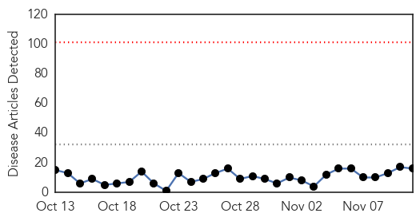
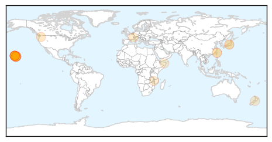
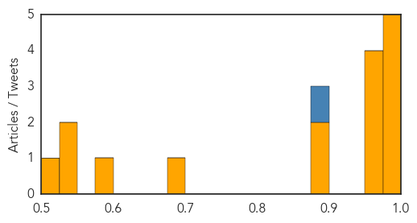
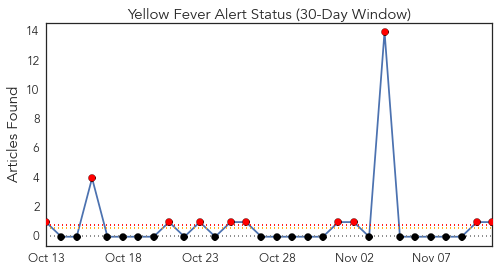
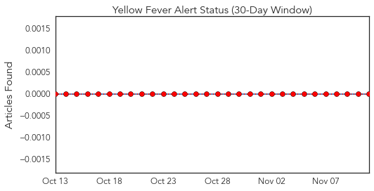
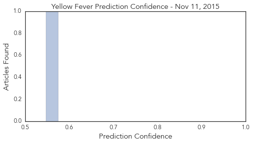

Dengue Fever
30-Day Web Trend
0 alerts, 0 warnings

30-Day Twitter Trend
5 alerts, 3 warnings

Article Locations
Article Confidences
Top Articles:
- 0.994
- 101 cases of dengue fever confirmed on Hawaii Island
- 0.988
- State fights dengue fever with 'Fight the Bite' initiative
- 0.988
- Healthy humans can give dengue virus to mosquitos
- 0.987
- Hawaiian officials investigate dengue fever outbreak
- 0.978
- Thirty-three Cases of Dengue Fever on Hawaii Island – Entomology Today
- 0.973
- Another nine deaths from dengue confirmed in Taiwan - Xinhua
- 0.961
- ‘Fight the Bite’: State starts dengue fever outreach as cases hit 27
- 0.960
- Dengue fever outbreak on Hawaii Island widens
- 0.955
- State fights dengue fever with 'Fight the Bite' initiative
- 0.886
- State begins new anti-bite campaign
- 0.876
- Big Island Dengue cases now up to 33
- 0.683
- Holiday Epidemics: The El Niño Warning
- 0.582
- El Nino threatens 11 million children in Africa with hunger, disease: UN
- 0.544
- Climate change poses growing health threat: UN
- 0.525
- Millions of children's lives at stake as El Niño strengthens: UNICEF report
- 0.507
- El Nino threatens 11 million children in Africa with hunger, disease: U.N.
Top Tweets:
- 0.965
- Nearly three dozen cases of dengue fever reported in Hawaii - https://t.co/oxuJ9noNO7 ebola
- 0.561
- AFD blog `PNAS: Asymptomatic Humans Transmit Dengue Virus To Mosquitoes' https://t.co/gdUXM53cp6
- 0.536
- Flavivirus news: Dengue patients with few or no symptoms transmit virus to mosquitoes - News-Me... https://t.co/2PG9mFgjEI pathogenposse
- 0.530
- Flavivirus news: Healthy humans can give dengue virus to mosquitos - Ars Technica: Healthy huma... https://t.co/tfGOEC2n4m pathogenposse
Yellow Fever
30-Day Web Trend
11 alerts, 0 warnings

30-Day Twitter Trend
0 alerts, 0 warnings

Article Locations

Article Confidences
Top Articles:
Top Tweets:
-
No tweets found for Nov 11, 2015